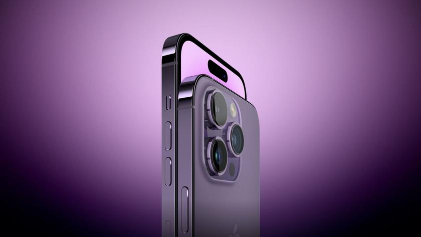
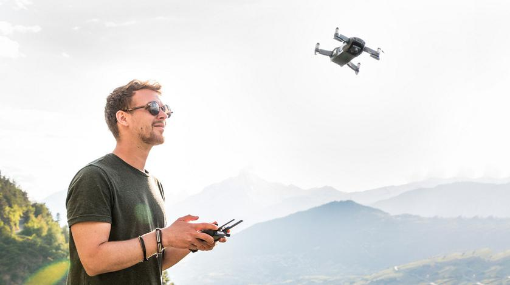

Автор: Мирослав Трінько, сегодня, 11:23
Кроме подробностей о новом Mac Pro, журналист и инсайдер Марк Гурман (Mark Gurman) рассказал некоторую информацию о следующих iPhone.
Согласно информатору, в этом году все четыре модели iPhone получат порты для зарядки USB-C и дисплеи с Dynamic Island. То есть новинки будут иметь овальное отверстие для камеры и датчиков Face ID. Что касается диагоналей, то они будут такими же: iPhone 15 и iPhone 15 Pro оснастят экранами на 6.1 дюйм, а iPhone 15 Plus и iPhone 15 Ultra — на 6.7 дюймов.
Топовые смартфоны линейки смогут похвастаться корпусами с титановой рамкой. Кроме этого iPhone 15 Pro и Phone 15 Ultra лишаться кнопок. Их заменят специальными панелями с Taptic Engine.
Подписывайтесь на наш нескучный канал в Telegram, чтобы ничего не пропустить.
Автор: Дедушка Ма, 17 ноября 2021, 19:05
Буквально с каждым днем жажду летать утоляет все больше землян. Не каждому дано стать пилотом «Боинга», но каждый может приобрести дрон (коптер) по своему вкусу и материальным возможностям. Вот только дронов становится все больше и больше. И неминуемо предстает извечная проблема выбора. Мы попытались разобраться в нынешнем многообразии беспилотников и порекомендовать лучшие из них для приобретения на AliExpress.
Буквально с каждым днем жажду летать утоляет все больше землян. Не каждому дано стать пилотом «Боинга», но каждый может приобрести дрон (коптер) по своему вкусу и материальным возможностям. Вот только дронов становится все больше и больше. И неминуемо предстает извечная проблема выбора. Мы попытались разобраться в нынешнем многообразии беспилотников и порекомендовать лучшие из них для приобретения на AliExpress.
Дешевле всего (до $30) стоят простые дроны-игрушки, характеризуемые неубиваемостью, относительной прочностью и ценовой доступностью. Это отличные подарки для детей и любознательных новичков (от слова «совсем»). Как говорится, «дешево и сердито». Такие микрокоптеры — отличная развлекуха, особенно в наше карантино-ковидное время. Летают даже в малогабаритных «хрущевках», отвлекая от локдаунов. Подарок такого гаджета малолетнему сыну резко повышает его шансы стать-таки пилотом «Боинга» по достижении достаточной взрослости.
Следующая ступенька — это беспилотники начального уровня ($40-70), которые рекомендуются для практического постижения азов пилотажа. Такой и потерять (если что) не очень жалко. Дополнительных функций не особо, но ведь прежде всего надо научиться летать и испытать тягу к небу через повышенный вброс адреналина.
Анализ показал, что 43% покупателей на AliExpress предпочитают ценовой диапазон — $36.3 — 65.95, а еще 32% пользователей - $17.17 – 36.3. Однако для полноты картины возьмем и пару моделей покруче и подороже.